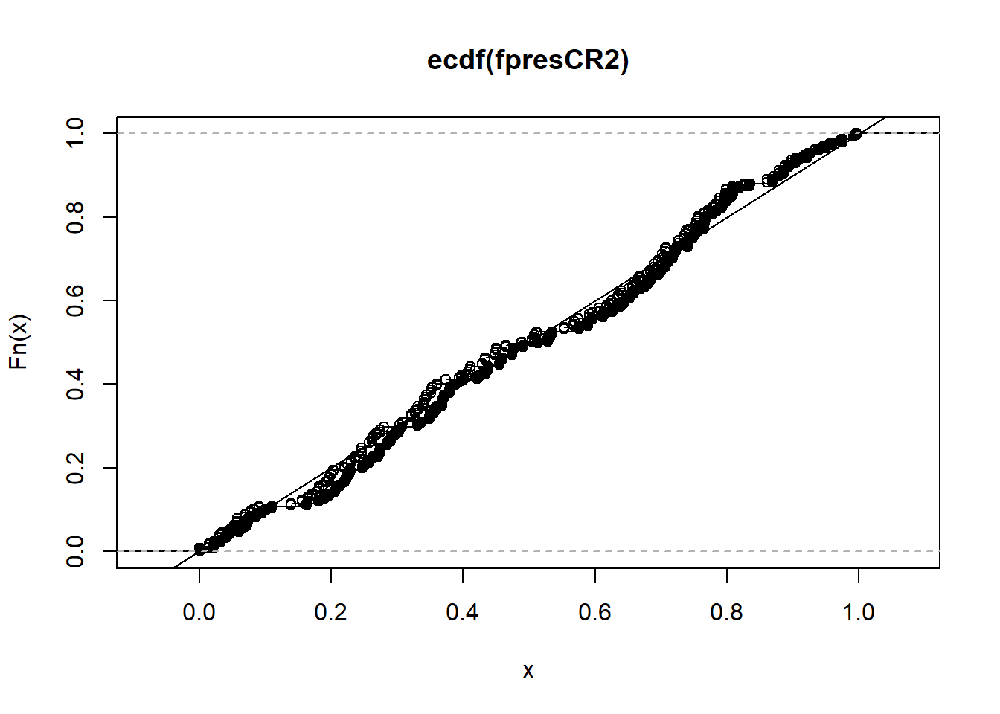

Chapter 5 Analysis Choices
We organize our discussion of analysis tactics by a study’s design. Different study designs require different analyses. But there are a few general tactics that we use to pursue the strategy of transparent, valid, and statistically precise statements about the results of our experiments.
The nature of the data that we expect to see from a given experiment also informs our analysis plans. For example, we may make some choices based on on the nature of the measured outcome — a binary outcome, a symmetrically distributed continuous outcome, and a heavily skewed continuous outcome each might each call for different analytical approaches.
We tend to ask three questions of each of our studies, and we answer each with a different statistical procedure:
- Can we detect an effect in our experiment? (We use hypothesis tests to answer this question).
- What is our best guess about the size of the effect of the experiment? (We estimate the average treatment effect of our interventions to answer this question.)
- How precise is our guess? (We report confidence intervals and standard errors to answer this question.)
Each procedure below describes methods of answering those three questions for different categories of experiments. In our Analysis Plans, we try to anticipate many of the common decisions involved in data analysis — including how we will treat missing data, how we will rescale, recode, and combine columns of raw data, etc. We touch on some of these topics below in general terms.
5.1 Completely or Urn-Draw Randomized Trials
5.1.1 Two arms
5.1.1.1 Continuous outcomes
In a completely randomized trial where outcomes take on many levels (units like times, counts of events, dollars, percentages, etc.), we assess the weak null hypothesis of no average effects, we estimate an average treatment effect, and we often also assess the sharp null hypothesis of no effect for any unit using some test statistic other than a difference of means.7 This last assessment allows us to check on whether our choice to focus on mean differences matters for our substantive interpretation of the study.
5.1.1.1.1 Estimating the average treatment effect and testing the weak null of no average effects
We show the kind of code we use for these purposes here. Below, Y is the outcome variable and Z is an indicator of the assignment to treatment.
## This function comes from the estimatr package
estAndSE1 <- difference_in_means(Y ~ Z,data = dat1)
print(estAndSE1)Design: Standard
Estimate Std. Error t value Pr(>|t|) CI Lower CI Upper DF
Z 4.637 1.039 4.465 8.792e-05 2.524 6.75 33.12Notice that the standard errors that we use are not the same as those produced by OLS by default:
Estimate Std. Error t value Pr(>|t|)
(Intercept) 2.132 0.4465 4.775 6.283e-06
Z 4.637 0.8930 5.193 1.123e-06The standard errors we prefer reflect repeated randomization from a fixed experimental pool. This is known as the HC2 standard error. Specifically, Lin (2013) and Samii and Aronow (2012) show that the standard error estimator derived for an unbiased average treatment effect within a “finite-sample” or design-based framework (i.e., the Neyman standard error) is equivalent to the HC2 standard error. These SEs are produced by default from the estimatr package’s function difference_in_means() and the lmtest package’s functions coeftest() and coefci(). They can also be produced using the vcovHC() function from the sandwich package.
While our preference for HC2 errors follows from their design-based justification, many researchers instead encounter them as one of several methods of correcting OLS standard errors for a problem called heteroscedasticity. Essentially, this means that the variance of the regression model’s error term is not constant across observations.8 When using OLS to analyze data from a two-arm randomized trial, for instance, this might occur because the variance of the outcome is different in the treatment and control groups. This is quite common in practice.
5.1.1.1.2 Testing the sharp null of no effects
We often assess the sharp null of no effects via direct permutation as a check on the assumptions underlying the calculations and statistical inferences above. We tend to use a -statistic as our test statistic in this case to parallel the above tests. But we might use a rank-based test statistic instead if we are concerned about long-tails (i.e., skew) reducing statistical power.
Below, we show how to perform these tests using two different R packages: coin, and ri2. First the coin package (Hothorn et al. 2021):
## The coin package
test1coinT <- oneway_test(Y~factor(Z),data=dat1,distribution=approximate(nresample=1000))
test1coinT
Approximative Two-Sample Fisher-Pitman Permutation Test
data: Y by factor(Z) (0, 1)
Z = -4.6, p-value <0.001
alternative hypothesis: true mu is not equal to 0test1coinR<- oneway_test(rankY~factor(Z),data=dat1,distribution=approximate(nresample=1000))
test1coinR
Approximative Two-Sample Fisher-Pitman Permutation Test
data: rankY by factor(Z) (0, 1)
Z = -4.9, p-value <0.001
alternative hypothesis: true mu is not equal to 0test1coinWR <- wilcox_test(Y~factor(Z),data=dat1,distribution=approximate(nresample=1000))
test1coinWR
Approximative Wilcoxon-Mann-Whitney Test
data: Y by factor(Z) (0, 1)
Z = -4.9, p-value <0.001
alternative hypothesis: true mu is not equal to 0Next, the ri2 package (Coppock 2022b):
Random assignment procedure: Complete random assignment
Number of units: 100
Number of treatment arms: 2
The possible treatment categories are 0 and 1.
The number of possible random assignments is approximately infinite.
The probabilities of assignment are constant across units:
prob_0 prob_1
0.75 0.25 test1riT <- conduct_ri(Y ~ Z, declaration = thedesign1,
sharp_hypothesis = 0, data = dat1, sims = 1000)
tidy(test1riT) term estimate p.value
1 Z 4.637 0test1riR <- conduct_ri(rankY ~ Z, declaration = thedesign1,
sharp_hypothesis = 0, data = dat1, sims = 1000)
tidy(test1riR) term estimate p.value
1 Z 30.8 05.1.1.2 Binary outcomes
We tend to focus on differences in proportions when we are working with binary outcomes. A statement such as “The effect was 5 percentage points.” has tended to make communication with our policy partners easier than a discussion in terms of log odds or odds ratios. Our tests of the hypothesis of no difference may change in the case of binary outcomes, however, in order to increase statistical power. In addition to difficulties in interpretation and communication, we avoid logistic regression coefficients because of the bias problem noticed by Freedman (2008b) in the case of covariance adjustment or more complicated research designs.
5.1.1.2.1 Estimating the average treatment effect and testing the weak null of no average effects
We can estimate effects and produce standard errors for differences of proportions using the same process as above. The average treatment effect estimate here represents the difference in the proportions of positive responses (i.e., ) between the treatment conditions. The standard error is still valid because it is based on the design of the study and not the distribution of the outcomes.
## Make some binary outcomes
dat1$u <- runif(ndat1)
dat1$v <- runif(ndat1)
dat1$y0bin <- ifelse(dat1$u>.5, 1, 0) # control potential outcome
dat1$y1bin <- ifelse((dat1$u+dat1$v) >.75, 1, 0) # treated potential outcomes
dat1$Ybin <- with(dat1, Z*y1bin + (1-Z)*y0bin)
truePropDiff <- mean(dat1$y1bin) - mean(dat1$y0bin)Design: Standard
Estimate Std. Error t value Pr(>|t|) CI Lower CI Upper DF
Z 0.04 0.1168 0.3425 0.7337 -0.1959 0.2759 40.93When we have an experiment that includes a treatment and control group with binary outcomes, and when we are estimating the ATE, the standard error from a difference in proportions test is the same as the Neyman standard error (and therefore the HC2 error). In contrast, the standard error from a regular OLS regression with a binary outcome — sometimes called a linear probability model — will be at least slightly incorrect due to inherent heteroscecdasticity in such models (Angrist and Pischke 2009).
To see some logic for this, first consider that difference-in-proportion standard errors are estimated with the following equation:
We can think of as the size of the group assigned treatment, as the size of the group assigned control, as the proportion of “successes” in the group assigned treatment, and as the proportion of “successes” in the group assigned control. Note that — the numerator in the fractions above — represents the variance of a given proportion, .
Now, compare this with the Neyman standard error equation (Lin 2013):9
is the vector of observed outcomes under control, and is the vector of observed outcomes under treatment. This equation indicates that we use the observed variances in each treatment group to estimate the Neyman standard error for a difference in means.
The code below compares the various standard error estimators discussed here.
nt <- sum(dat1$Z)
nc <- sum(1-dat1$Z)
## 2. Find SE for difference of proportions.
p1 <- mean(dat1$Ybin[dat1$Z==1])
p0 <- mean(dat1$Ybin[dat1$Z==0])
se1 <- (p1*(1-p1))/nt
se0 <- (p0*(1-p0))/nc
se_prop <- round(sqrt(se1 + se0), 4)
## 3. Find Neyman SE
varc_s <- var(dat1$Ybin[dat1$Z == 0])
vart_s <- var(dat1$Ybin[dat1$Z == 1])
se_neyman <- round(sqrt((vart_s/nt) + (varc_s/nc)), 4)
## 4. Find OLS SE
simpOLS <- lm(Ybin~Z,dat1)
se_ols <- round(coef(summary(simpOLS))["Z", "Std. Error"], 2)
## 5. Find Neyman SE (which are the HC2 SEs)
se_neyman2 <- coeftest(simpOLS,vcov = vcovHC(simpOLS,type="HC2"))[2,2]
se_neyman3 <- estAndSE2$std.error## 5. Show SEs
se_compare <- as.data.frame(cbind(se_prop, se_neyman, se_neyman2, se_neyman3, se_ols))
rownames(se_compare) <- "SE(ATE)"
colnames(se_compare) <- c("diff in prop", "neyman1","neyman2","neyman3", "ols")
print(se_compare) diff in prop neyman1 neyman2 neyman3 ols
SE(ATE) 0.1148 0.1168 0.1168 0.1168 0.125.1.1.2.2 Testing the sharp null of no effects
In this case, with a binary treatment and a binary outcome, we could perform a simple test of the hypothesis that outcomes are independent of treatment assignment using what is called Fisher’s exact test. We can also use the permutation-based approaches above to produce results that do not rely on asymptotic assumptions. Below we show how Fisher’s exact test, the Exact Cochran-Mantel-Haenszel test, and the Exact -squared test produce the same answers.
Fisher's Exact Test for Count Data
data: dat1$Z and dat1$Ybin
p-value = 0.8
alternative hypothesis: true odds ratio is not equal to 1
95 percent confidence interval:
0.4304 3.2617
sample estimates:
odds ratio
1.173
Exact Pearson Chi-Squared Test
data: factor(Ybin) by factor(Z) (0, 1)
chi-squared = 0.12, p-value = 0.8
Exact Generalized Cochran-Mantel-Haenszel Test
data: factor(Ybin) by factor(Z) (0, 1)
chi-squared = 0.12, p-value = 0.8Notice that a difference of proportions test can also be done directly (rather than through OLS). Here, the null hypothesis is tested while using a binomial distribution rather than a Normal distribution to approximate the underlying randomization distribution. In reasonably-sized samples, both approximations perform well.
2-sample test for equality of proportions with continuity correction
data: mat[, 2:1]
X-squared = 0.013, df = 1, p-value = 0.9
alternative hypothesis: two.sided
95 percent confidence interval:
-0.2917 0.2117
sample estimates:
prop 1 prop 2
0.52 0.56 5.1.2 Multiple arms
Multiple treatment arms can be analyzed as above, except that we now have
more than one comparison between a treated group and a control group. Such studies raise both substantive and statistical questions about multiple
testing (or “multiple comparisons”). For example, the difference_in_means
function asks which average treatment effect it should estimate — and it
only presents one comparison at a time: here we compare the treatment T2
with the baseline outcome of T1. We can also compare both of T2 and T3 with T1 at the same time, as in the second set of results (lm_robust implements the same standard errors as difference_in_means but allows for more flexibility).
estAndSE3 <- difference_in_means(Y~Z4arms,data=dat1,condition1="T1",condition2="T2")
print(estAndSE3)Design: Standard
Estimate Std. Error t value Pr(>|t|) CI Lower CI Upper DF
Z4armsT2 0.7329 1.298 0.5647 0.5749 -1.877 3.343 47.67 Estimate Std. Error t value Pr(>|t|) CI Lower CI Upper DF
(Intercept) 2.5541 0.8786 2.9070 0.004532 0.8101 4.298 96
Z4armsT2 0.7329 1.2979 0.5647 0.573593 -1.8433 3.309 96
Z4armsT3 0.1798 1.1582 0.1552 0.876956 -2.1192 2.479 96
Z4armsT4 2.0372 1.2353 1.6491 0.102393 -0.4149 4.489 96In this case, we could make different possible comparisons between pairs of treatment groups. If there were really no effects of any treatment, and if we chose to reject the null at the standard significance threshold of , we would actually claim that there was at least one effect more than 5% of the time. , or 27% of the time, we would make a false positive error, claiming an effect existed when it did not.
In general, our analyses of studies with multiple arms should reflect the fact that we are making multiple comparisons. Two points are worth emphasizing here. First, the family-wise error rate (FWER) of these tests will differ from the individual error rate of single test. In short, testing more than one hypothesis increases the chance of making at least one Type I error (i.e., incorrectly rejecting a true null hypothesis). Suppose instead of testing a single hypothesis at a conventional significance level of we tested two hypothesis at . The probability of retaining both hypotheses is and the probability of rejecting at least one of these hypotheses is — almost double our stated significance threshold of .
Second, multiple tests will often be correlated, and our corrections for multiple testing should recognize these relationships (which will penalize the multiple testing less). When tests are correlated, this means that there is some relationship between the test statistics (e.g., student’s t-statistic, or a statistic) used to perform inference in each case (e.g., calculating p-values). In other words, the test statistics are jointly distributed — when one test statistic is higher, the other will tend to be higher as well.10
This in mind, our standard practice in multi-arm trials is the following:
First, decide on a focal, confirmatory comparison for the entire evaluation: say, control/status quo versus receiving any version of the treatment. This test should have more statistical power, and will also have a correctly controlled false positive rate. This will serve as the primary test on which our conclusions are based.
Next, either perform the rest of the comparisons as exploratory analyses — i.e., as analyses that may inform future projects and give hints about where we might be seeing more or less of an effect, but which cannot serve as a foundation for overall conclusions on their own — OR perform a series of additional confirmatory comparisons that adjusts for the collective false positive rate (generally to control the FWER, though we have sometimes consider adjustments to control the false discovery rate, or FDR).11 We may use the Tukey HSD procedure for pairwise comparisons in a case like our example above OR test the hypotheses in a particular order to preserve statistical power (Rosenbaum 2008).
5.1.2.1 Adjusting p-values and confidence intervals for multiple comparisons using Tukey HSD in R
Here is an illustration of how we might adjust for multiple comparisons.
To reflect that fact that we are making multiple comparisons, we can adjust -values from (uncorrelated) tests to control the familywise error rate at through either a single step procedure (e.g. Bonferroni correction) or a stepwise stepwise procedure (such as the Holm correction). We might also control the false discovery rate (e.g., using the Benjamini-Hochberg correction).
Our standard practice is to adjust the FWER using what we often refer to as Holm correction/adjustment. For more on such adjustments and multiple comparisons see EGAP’s 10 Things you need to know about multiple comparisons.
# Get p-values but exclude intercept
pvals <- summary(estAndSE3multarms)$coef[2:4,4]
round(p.adjust(pvals, "none"), 3)Z4armsT2 Z4armsT3 Z4armsT4
0.574 0.877 0.102 Z4armsT2 Z4armsT3 Z4armsT4
1.000 1.000 0.307 Z4armsT2 Z4armsT3 Z4armsT4
1.000 1.000 0.307 Z4armsT2 Z4armsT3 Z4armsT4
0.877 0.877 0.307 Simply adjusting -values from this linear model, however, would ignore the fact that we may be interested in other pairwise comparisons, such as the difference in effects between receiving T3 vs T4. It also ignores potential correlations in the distribution of test statistics.
Below we demonstrate how to implement a Tukey Honestly Signficant Differences (HSD) test. The Tukey HSD test (sometimes called a Tukey range test or just a Tukey test) calculates multiple-comparison-adjusted -values and simultaneous confidence intervals for all pairwise comparisons in a model, while taking into account possible correlations between test statistics. It is similar to a two-sample t-test, but with built in adjustment for multiple comparisons.
The test statistic for any comparison between two equally-sized groups and is:
and are the means in groups and , respectively. The means are generally listed in descending order based on their size in each comparison. is the pooled standard deviation of the outcome, and is the common sample size. A critical value is then chosen for given the desired significance level, , the number of groups being compared, , and the degrees of freedom, : .
The confidence interval for any difference between equally-sized groups would then be:12
We present an implementation of the Tukey HSD test using the glht() function from the multcomp package, which offers more flexiblity than the
TukeyHSD in the base stats package at the price of a slightly more complicated syntax.
Using the glht() function’s linfcnt argument, we tell the function to
conduct a Tukey test of all pairwise comparisons for our treatment indicator, .
Simultaneous Tests for General Linear Hypotheses
Multiple Comparisons of Means: Tukey Contrasts
Fit: lm(formula = Y ~ Z4arms, data = dat1)
Linear Hypotheses:
Estimate Std. Error t value Pr(>|t|)
T2 - T1 == 0 0.733 1.226 0.60 0.93
T3 - T1 == 0 0.180 1.226 0.15 1.00
T4 - T1 == 0 2.037 1.226 1.66 0.35
T3 - T2 == 0 -0.553 1.226 -0.45 0.97
T4 - T2 == 0 1.304 1.226 1.06 0.71
T4 - T3 == 0 1.857 1.226 1.51 0.43
(Adjusted p values reported -- single-step method)We can plot the 95% family wise confidence intervals from these comparisons
## Save dfault ploting parameters
op <- par()
## Add space to left-hand outer margin
par(oma = c(1, 3, 0, 0))
plot(tukey_mc)
We can also obtain simultaneous confidence intervals at other levels of statistical significance using the confint() function.
## Generate and plot 90% confidence intervals
tukey_mc_90ci <- confint(tukey_mc, level = .90)
plot(tukey_mc_90ci)
See also: pairwise.prop.test for binary outcomes.
5.1.3 Multiple Outcomes
Our studies often involve more than one outcome measure. Assessing the effect of even a simple two-arm treatment on 10 different outcomes raises the same kinds of questions that come up in the context of multi-arm trials, generally requiring applications of the methods discussed above.
5.2 Covariance Adjustment (the use of background information to increase precision)
When we have background or baseline information about experimental units, we can use this to increase the precision with which we estimate our treatment effects (or, equivalently, increase the statistical power of our tests). We prefer to use this information during the design phase to create block randomized designs, but we sometimes have access to such background information after the study has been fielded, and so we will pre-specify use of this information to increase our statistical power.
We tend to avoid the practice of adjusting for the covariates in a linear and additive fashion because of this estimator of the average treatment effect is biased (Freedman 2008a) whereas a version of the estimator that we call the “Lin estimator” is not (Lin 2013). Note that the bias in the commonly used linear covariance adjustment estimator tends to be quite small, and especially small when sample sizes are large (Lin 2013). Yet, because it is basically costless to use the Lin estimator, this is our standard practice (see also https://declaredesign.org/blog/2018-09-11-controlling-pretreatment-covariates.html)
5.2.1 Intuition about bias in the least squares estimator of the ATE with covariates
When we estimate the average treatment effect by using a least squares we tend to say that we “regress” some outcome for each unit , , on (often binary) treatment assignment, , where if a unit is assigned to treatment and 0 if assigned to control. And we write a linear model relating and as below, where represents the difference in means of between units with and :
This is a common practice because, we know that the formula to estimate in equation (??) is the same as the difference of means in between treatment and control groups:
This last term, expressed with covariances and variances, is the expression for the least squares coefficient in a bivariate linear least squares model. And we also know that this estimator of the average treatment effect has no systematic error (i.e. is unbiased), so we can write where we take the expectation across randomizations consistent with the experimental design.
Now, sometimes we have a covariate and we use it as would be common in the analysis of non-experimental data:
What is in this case? We know the matrix representation here , but here is the scalar formula for this particular case in (??):
In very large experiments — because is randomly assigned and is thus independent of background variables like — however in any given finite sized experiment so this does not reduce to the unbiased estimator of the bivariate case. Thus, Freedman (2008a) showed that there is a small amount of bias in using equation (??) to estimate the average treatment effect.
As a way to engage with this problem, Lin (2013) suggested using the following least squares approach — regressing the outcome on binary treatment assignment and its interaction with mean-centered covariates.
See the Green-Lin-Coppock SOP for more examples of this approach to covariance adjustment.
5.2.2 The Lin Approach to Covariance Adjustment
Here we show how covariance adjustment can create bias in estimation of the average treatment effect — and how to reduce this bias while using the Lin procedure as well as by increasing the size of the experiment. In this case, we compare an experiment with 20 units to an experiement with 100 units, in each case with half of the units assigned to treatment by complete random assignment.
We use the DeclareDesign package for R to make
this process of assessing bias easier. So, much of the code that follows
provides input to the diagnose_design command which repeats the design of the
experiment many times, each time estimating an average treatment effect, and
comparing the mean of those estimate to the truth (labeled “Mean Estimand”
below).
The true potential outcomes (y1 and y0) are generated using one covariate,
called cov2. In what follows we compare the performance of the simple
estimator using OLS, to estimators that use Lin’s procedure involving just the
correct covariate, to estimators that use incorrect covariates (since we rarely
know exactly the covariates that help generate any given behavioral outcome).
##summary(lm(y0~cov2,data=dat1))$r.squared
##summary(lm(y1~cov2,data=dat1))$r.squared
wrkdat1 <- dat1 %>% dplyr::select(id,y1,y0,contains("cov"))
popbigdat1 <- declare_population(wrkdat1)
## Make a small dataset to represent a small experiment or a cluster randomized experiment with few clusters
set.seed(12345)
smalldat1 <- dat1 %>% dplyr::select(id,y1,y0,contains("cov")) %>% sample_n(20)
## The relevant covariate is a reasonably strong predictor of the outcome
summary(lm(y0~cov2,data=smalldat1))$r.squared
### Now declare the differeent inputs for DeclareDesign
popsmalldat1 <- declare_population(smalldat1)
assignsmalldat1 <- declare_assignment(Znew=complete_ra(N,m=10))
assignbigdat1 <- declare_assignment(Znew=complete_ra(N,m=50))
## No additional treatment effects other than those created when we made y0 and y1 earlier
po_functionNull <- function(data){
data$Y_Znew_0 <- data$y0
data$Y_Znew_1 <- data$y1
data
}
ysdat1 <- declare_potential_outcomes(handler = po_functionNull)
theestimanddat1 <- declare_inquiry(ATE = mean(Y_Znew_1 - Y_Znew_0))
theobsidentdat1 <- declare_reveal(Y, Znew)
thedesignsmalldat1 <- popsmalldat1 + assignsmalldat1 + ysdat1 + theestimanddat1 +
theobsidentdat1
thedesignbigdat1 <- popbigdat1 + assignbigdat1 + ysdat1 + theestimanddat1 +
theobsidentdat1estCov0 <- declare_estimator(Y~Znew, inquiry=theestimanddat1, model=lm_robust, label="CovAdj0: Lm, No covariates")
estCov1 <- declare_estimator(Y~Znew+cov2, inquiry=theestimanddat1, model=lm_robust, label="CovAdj1: Lm,Correct Covariate")
estCov2 <- declare_estimator(Y~Znew+cov1+cov2+cov3+cov4+cov5+cov6+cov7+cov8, inquiry=theestimanddat1, model=lm_robust, label="CovAdj2: Lm, Mixed Covariates")
estCov3 <- declare_estimator(Y~Znew+cov1+cov3+cov4+cov5+cov6, inquiry=theestimanddat1, model=lm_robust, label="CovAdj3: Lm, Wrong Covariates")
estCov4 <- declare_estimator(Y~Znew,covariates=~cov1+cov2+cov3+cov4+cov5+cov6+cov7+cov8, inquiry=theestimanddat1, model=lm_lin, label="CovAdj4: Lin, Mixed Covariates")
estCov5 <- declare_estimator(Y~Znew,covariates=~cov2, inquiry=theestimanddat1, model=lm_lin, label="CovAdj5: Lin, Correct Covariate")thedesignsmalldat1PlusEstimators <- thedesignsmalldat1 + estCov0 + estCov1 + estCov2 +
estCov3 + estCov4 + estCov5
thedesignbigdat1PlusEstimators <- thedesignbigdat1 + estCov0 + estCov1 + estCov2 +
estCov3 + estCov4 + estCov5sims <- 200
set.seed(12345)
thediagnosisCovAdj1 <- diagnose_design(thedesignsmalldat1PlusEstimators, sims = sims, bootstrap_sims = 0)
thediagnosisCovAdj1set.seed(12345)
thediagnosisCovAdj2 <- diagnose_design(thedesignbigdat1PlusEstimators, sims = sims, bootstrap_sims = 0)
thediagnosisCovAdj2After 1000 simulations using the small experiment (N=20) we can see that the “CovAdj1: Lm, Correct Covariate” lines show fairly large bias compared to the estimator using no covariates at all. The Lin approach using only the known to be correct covariate reduces the bias, but does not erase it. However, the unadjusted estimator has fairly low power where as the Lin approach with the correct covariate “CovAdj5: Lin, Correct Covariate” has excellent power to detect the 1 SD effect built into this experiment. One interesting result here is that the Lin approach is worst (in power and even false positive rate (called “Coverage” below) when a mixture or correct and incorrect covariates are added to the linear model following the interaction-and-centering based approach.
diagcols <- c(3,5,6,7,8,9,10,11)
## See https://haozhu233.github.io/kableExtra/awesome_table_in_html.html
kable(reshape_diagnosis(thediagnosisCovAdj1)[,diagcols] ) # %>% kable_styling() %>% scroll_box(width = "100%", height = "400px")| Estimator | Term | Mean Estimand | Mean Estimate | Bias | SD Estimate | RMSE | Power |
|---|---|---|---|---|---|---|---|
| CovAdj0: Lm, No covariates | Znew | 5.03 | 5.08 | 0.05 | 1.78 | 1.78 | 0.65 |
| CovAdj1: Lm,Correct Covariate | Znew | 5.03 | 5.32 | 0.29 | 1.08 | 1.11 | 0.98 |
| CovAdj2: Lm, Mixed Covariates | Znew | 5.03 | 5.12 | 0.09 | 1.39 | 1.39 | 0.89 |
| CovAdj3: Lm, Wrong Covariates | Znew | 5.03 | 5.21 | 0.18 | 1.64 | 1.65 | 0.78 |
| CovAdj4: Lin, Mixed Covariates | Znew | 5.03 | 4.58 | -0.45 | 8.07 | 8.06 | 0.35 |
| CovAdj5: Lin, Correct Covariate | Znew | 5.03 | 5.13 | 0.10 | 1.05 | 1.05 | 1.00 |
The experiment with shows much smaller bias than the small experiment above. Since all estimators allow us to detect the 1 SD effect (Power=1), the RMSE (Root Mean Squared Error) column or “Mean Se” columns tell us about the precision of the estimators. Again, the unadjusted approach has low bias, but has the largest standard error. While the Lin approach with a mixture of correct and incorrect covariates has low bias, it shows slightly worse coverage (or false positive error rate) even it has most precision.
## See https://haozhu233.github.io/kableExtra/awesome_table_in_html.html
kable(reshape_diagnosis(thediagnosisCovAdj2)[,diagcols] ) # %>% kable_styling() %>% scroll_box(width = "100%", height = "400px")| Estimator | Term | Mean Estimand | Mean Estimate | Bias | SD Estimate | RMSE | Power |
|---|---|---|---|---|---|---|---|
| CovAdj0: Lm, No covariates | Znew | 5.45 | 5.45 | -0.01 | 0.76 | 0.76 | 1.00 |
| CovAdj1: Lm,Correct Covariate | Znew | 5.45 | 5.47 | 0.02 | 0.50 | 0.50 | 1.00 |
| CovAdj2: Lm, Mixed Covariates | Znew | 5.45 | 5.48 | 0.03 | 0.53 | 0.53 | 1.00 |
| CovAdj3: Lm, Wrong Covariates | Znew | 5.45 | 5.44 | -0.01 | 0.63 | 0.63 | 1.00 |
| CovAdj4: Lin, Mixed Covariates | Znew | 5.45 | 5.47 | 0.02 | 0.53 | 0.53 | 1.00 |
| CovAdj5: Lin, Correct Covariate | Znew | 5.45 | 5.47 | 0.01 | 0.50 | 0.50 | 1.00 |
simdesignsCovAdj1 <- get_simulations(thediagnosisCovAdj1)
trueATE1covadj <- with(dat1,mean(y1-y0))
## simdesigns <- simulate_design(thedesign,sims=sims)
simmeansCovAdj1 <- simdesignsCovAdj1 %>% group_by(estimator) %>% summarize(expest=mean(estimate))Although the Lin approach works well when covariates are few and sample sizes are large, these simulations show where the approach is weak: when covariates are many. In this case the estimator involving both correct and irrelevant covariates used 18 terms. Fitting a model with 18 terms with N=20 allows nearly any observation to exert undue influence, increases the risk of serious multicollinearity, and leads to overfitting problems in general.
So far, our team has not run into this problem because our studies have tended to involve many thousands of units and relatively few covariates. However, we are considering a few alternative approaches should we confront this situation in the future such as (1) collapsing the covariates into fewer dimensions (using a Mahalanobis distance or principal components based distance) or working with a residualized version of the outcome as described below.
5.2.3 The Rosenbaum Approach The Covariance Adjustment
When we have many covariates, sometimes the Lin style approach prevents us from calculating appropriate standard errors and/or can have inflated bias due to overfitting. Rosenbaum (2002) showed an approach in which the outcomes are regressed on covariates, ignoring treatment assignment, and then the residuals from that regression are used to estimate an average treatment effect.
We do a similar evaluation of that approach here.
make_est_fun<-function(covs){
## covs is a vector of character names of covariates
force(covs)
covfmla <- reformulate(covs,response="Y")
function(data){
data$e_y <- residuals(lm(covfmla,data=data))
obj <-lm_robust(e_y~Znew,data=data)
res <- tidy(obj) %>% filter(term=="Znew")
return(res)
}
}
est_fun_correct <- make_est_fun("cov2")
est_fun_mixed<- make_est_fun(c("cov1","cov2","cov3","cov4","cov5","cov6","cov7","cov8"))
est_fun_incorrect <- make_est_fun(c("cov1","cov2","cov3","cov4","cov5","cov6"))
## est_fun_correct(blah)
estCov6 <- declare_estimator(handler = tidy_estimator(est_fun_correct), inquiry=theestimanddat1, label="CovAdj6: Resid, Correct")
estCov7 <- declare_estimator(handler = tidy_estimator(est_fun_mixed), inquiry=theestimanddat1, label="CovAdj7: Resid, Mixed")
estCov8 <- declare_estimator(handler = tidy_estimator(est_fun_incorrect), inquiry=theestimanddat1, label="CovAdj8: Resid, InCorrect")
thedesignsmalldat1PlusRoseEstimators <- thedesignsmalldat1 + estCov0 + estCov1 + estCov2 +
estCov3 + estCov4 + estCov5 + estCov6 + estCov7 + estCov8
thedesignbigdat1PlusRoseEstimators <- thedesignbigdat1 + estCov0 + estCov1 + estCov2 +
estCov3 + estCov4 + estCov5 + estCov6 + estCov7 + estCov8set.seed(12345)
thediagnosisCovAdj3 <- diagnose_design(thedesignsmalldat1PlusRoseEstimators, sims = sims, bootstrap_sims = 0)
thediagnosisCovAdj3set.seed(12345)
thediagnosisCovAdj4 <- diagnose_design(thedesignbigdat1PlusRoseEstimators, sims = sims, bootstrap_sims = 0)
thediagnosisCovAdj3With a small sample (N=20), the Rosenbaum-style approach yields very little bias and quite high power using the correct covariate (“CovAdj6: Resid, Correct”), but poor performance in terms of bias and coverage with incorrect covariates — recall that coverage here uses the t-test that in turn relies on asymptotic approximations, and we are challenging this approximation with a small experiment and overfitting problems.
## See https://haozhu233.github.io/kableExtra/awesome_table_in_html.html
kable(reshape_diagnosis(thediagnosisCovAdj3)[7:9,diagcols] ) #%>% kable_styling() %>% scroll_box(width = "100%", height = "400px")| Estimator | Term | Mean Estimand | Mean Estimate | Bias | SD Estimate | RMSE | Power | |
|---|---|---|---|---|---|---|---|---|
| 7 | CovAdj6: Resid, Correct | Znew | 5.03 | 5.00 | -0.03 | 1.02 | 1.02 | 1.00 |
| 8 | CovAdj7: Resid, Mixed | Znew | 5.03 | 2.95 | -2.08 | 1.11 | 2.35 | 0.80 |
| 9 | CovAdj8: Resid, InCorrect | Znew | 5.03 | 3.53 | -1.50 | 1.20 | 1.92 | 0.85 |
With a larger experiment, the bias goes down, but coverage is poor with incorrect covariates in this approach as well. We speculate that performance might improve if we fit the covariance adjustment models that produce residuals separately for the treated and control groups.
## See https://haozhu233.github.io/kableExtra/awesome_table_in_html.html
kable(reshape_diagnosis(thediagnosisCovAdj4)[7:9,diagcols] ) # %>% kable_styling() %>% scroll_box(width = "100%", height = "400px")| Estimator | Term | Mean Estimand | Mean Estimate | Bias | SD Estimate | RMSE | Power | |
|---|---|---|---|---|---|---|---|---|
| 7 | CovAdj6: Resid, Correct | Znew | 5.45 | 5.42 | -0.03 | 0.49 | 0.49 | 1.00 |
| 8 | CovAdj7: Resid, Mixed | Znew | 5.45 | 5.05 | -0.40 | 0.53 | 0.67 | 1.00 |
| 9 | CovAdj8: Resid, InCorrect | Znew | 5.45 | 5.14 | -0.31 | 0.52 | 0.61 | 1.00 |
5.3 How to choose covariates for covariance adjustment?
Our analysis plans commonly specify a few covariates based on what we know about the mechanisms and context of the study. In general, if we have a measurement of the outcome before the treatment was assigned, the baseline outcome, we try to use it via blocking and/or via covariance adjustment.
When we have access to many covariates, we sometimes use simple machine learning methods to select variables that strongly predict the outcome.
5.3.0.1 Example of using the adaptive lasso for variable selection
Here we show how we use baseline data, data collected before the treatment was assigned or new policy implemented, to choose covariates that we then use as we have described above.
We tend to use the adaptive lasso rather than the simple lasso because the adaptive lasso has better theoretical properties (insert citation to Zhou) but also because the adaptive lasso tends to produce sparser results — and the bias from covariance adjustment can be severe if we add many many covariates to a covriance adjustment procedure.
TO DO
5.4 Block-randomized trials
We design block-randomized trials by splitting units into groups based on predefined characteristics — covariates that cannot be changed by the experimental treatment — and then randomly assigning treatment within each group. We use this procedure when we want to increase our ability to detect signal from noise and we think that the noise, or variation in the outcome of the experiment, is driven in part by the covariates that we use for blocking. For example, if we imagine the patterns of energy use will tend to differ according to size of family, we may create blocks or strata of different family sizes and randomly assign an energy saving intervention separately within those blocks. We also design block-randomized experiments when we want to assess effects within and across subgroups (for example, if we want to ensure that we have enough statistical power to detect a difference in effects between veterans and non-veterans). If we have complete random assignment, it is likely that the proportion of veterans assigned treatment will not be exactly same as the proportion of non-veterans receiving treatment. However, if we stratify or block the group on military status, and randomly assign treatment and control within each group, we can then ensure that equal proportions (or numbers) or veterans and non-veterans receive the treatment and control.
Most of the general ideas that we demonstrated in the context of completely randomized trials have direct analogues in the case of block randomized trials. The only additional question that arises with block randomized trials is about how to weight the contributions of each individual block when calculating an overall average treatment effect or testing an overall hypothesis about treatment effects.
We begin here with the simple case of testing the sharp null of no effects when we have a binary outcome — in the case of the Cochran-Mantel-Haenszel test the weighting of the different blocks is automatic.
5.4.1 Testing the null of no effects with binary outcomes and block randomization: Cochran-Mantel-Haenszel (CMH) test for K X 2 X 2 tables
We use the CMH test as a test of no effect for block-randomized trials with binary outcome.13 Because the blocks or strata are important to the experiment and outcomes, we want to keep the outcomes for each strata intact rather than pooling the outcomes together. Since we repeat the same experiment across each stratum, the CMH test tells us if the odds ratio in the experiments indicate that there is an association between outcomes and treatment/control across strata (Cochran 1954; Mantel and Haenszel 1959).
To set up the CMH test, we need k sets of 2x2 contingency tables. Suppose the table below represents outcomes from stratum i where A,B,C, and D are counts of observations:
| Assignment | Response | No response | Total |
|---|---|---|---|
| Treatment | A | B | A+B |
| Control | C | D | C+D |
| Total | A+C | B+D | A+B+C+D = T |
The CMH test statistic compares the sum of squared deviation between observed and expected outcomes of an experiment within one stratum to the variance of those outcomes, conditional on marginal totals.
where
and
In large enough samples, if there are no associations between Treatment and Reponse across strata, we would expect to see an odds ratio which is equal to 1, and, across randomizations and in large samples, this test statistic would have an asymptotic distribution with degrees of freedom = 1.
The odds ratio in this scenario is the combined weighted odds ratio of each two-armed trial with binary outcomes within one block or stratum.
The odds ratio for a given stratum is
With many strata, we can find a common odds ratio
That is, we add the odds ratios of each stratum and weigh it by the total in that stratum. If the odds ratio is greater than 1 then we suspect that there may be an association between the outcome and treatment across all strata and the CMH test statistic will be large. If , then this supports the null hypothesis that there is no association between treatment and outcome and the CMH test statistic will be small.
We can also use the CMH test to compare odds ratios between experiments, rather than compare against the null that the odds ratio = 1.
5.4.2 Estimating an overall Average Treatment Effect
Our team nearly always reports a single estimate of the average treatment effect whether or not we randomly assign a policy intervention within blocks or strata. We randomly assign the intervention within each block independently and we tend to define our overall ATE (the estimand) as a simple average of the individual additive treatment effects (for two treatments, remember that we tend to write this unobserved causal effect as ). So we tend to define the overall ATE as . Now, we have randomly assigned within blocks in order to (1) increase precision and (2) enable subgroup analysis. How can we “analyze as we have randomized” if we want to learn about using what we observe? Our approach is to build up from the block-level (see Gerber and Green (2012) for more on this approach). Say, for example, we imagine that the unobserved ATE within a given block, , was where we are averaging the individual level treatment effects () across all people in block . And now, imagine that we had an experiment with blocks of different sizes (and perhaps with different proportions assigned to treatment within block — perhaps certain blocks are more expensive places in which to run an experiment). We could learn about with a block-size weighted average of the such that . We can estimate with the observed analogue just as we have with the completely randomized experiment (after all, each block is a small completely randomized experiment in this example, and so we can estimate using the unbiased estimator where means “for in the treatment group”, where is the number of units assigned to treatment in block .
Note that many people do not use this unbiased estimator because the precision of tests based on this estimator are worse that those of another estimator that is slightly biased. We will demonstrate both methods — the block-size weighted estimator and what we call the precision-weighted estimator — here and offer some reflections on when a biased estimator that tends to produce answers closer to the truth might be preferred over an unbiased estimator where any given estimate may be farther from the truth. This estimator uses harmonic-weights. We have tended to call it a “precision-weighted average” and the weights on the blocks combine both the block size and the proportion of the block assigned to treatment for a binary treatment, so that the weight is and the estimator is .
First we show multiple approaches to producing estimates using these estimators. And then we demonstrate how (1) ignoring the blocks when estimating can produce problems in both estimation and testing, (2) how the block-size weighted approaches are unbiased but possibly less precise than the precision weighted approaches.
## Create block sizes and create block weights
B <- 10 # Number of blocks
dat <- data.frame(b=rep(1:B,c(8,20,30,40,50,60,70,80,100,800)))
dat$bF <- factor(dat$b)
set.seed(2201)
## x1 is a covariate that strongly predicts the outcome without treatment
dat <- group_by(dat,b) %>% mutate(nb=n(),
x1=rpois(n = nb,lambda=runif(1,min=1,max=2000)))
## The treatment effect varies by size of block (using sqrt(nb) because nb has such a large range.)
dat <- group_by(dat,b) %>% mutate(y0=sd(x1)*x1+rchisq(n=nb,df=1),
y0=y0*(y0>quantile(y0,.05)),
tauib = -(sd(y0))*sqrt(nb) + rnorm(n(),mean=0,sd=sd(y0)),
y1=y0+tauib,
y1=y1*(y1>0))
blockpredpower <- summary(lm(y0~bF,data=dat))$r.squaredTo make the differences between the approaches to estimation most vivid, we create a dataset with blocks of widely varying sizes, half of the blocks have half of the units assigned to treatment and the other half 10% of the units assigned to treatment. The baseline outcomes are strongly predicted by the blocks ( around ).
We will use the DeclareDesign approach to assess bias, coverage and power (or
precision) of the different estimators here. The next code block sets up the
simulation and also demonstrates different approaches to calculating the same
numbers to represent the true underlying ATE (we can only do this because we
are using simulation here to learn about different statistical techniques.)
## Using the Declare Design Machinery to ensure that the data here and the
## simulations below match
## Setting up Declare Design:
thepop <- declare_population(dat)
po_function <- function(data){
data$Y_Z_0 <- data$y0
data$Y_Z_1 <- data$y1
data
}
theys <- declare_potential_outcomes(handler = po_function)
theestimand <- declare_inquiry(ATE = mean(Y_Z_1 - Y_Z_0))
numtreated <- sort(unique(dat$nb))/rep(c(2,10),B/2)
theassign <- declare_assignment(Z=block_ra(blocks = bF,
block_m=numtreated))
theobsident <- declare_reveal(Y, Z)
thedesign <- thepop + theys + theestimand + theassign + theobsident
set.seed(2201)
dat2 <- draw_data(thedesign)
## Adding rank transformed outcomes for use later.
dat2 <- dat2 %>% group_by(b) %>% mutate(y0md = y0 - mean(y0),
y1md = y1 - mean(y1),
alignedY = Y - mean(Y),
rankalignedY = rank(alignedY)
)
## Now add individual level weights to the data. Different textbooks and algebra yield different expressions. We show that they are all the same.
dat2 <- dat2 %>% group_by(b) %>% mutate(nb = n(), ## Size of block
pib=mean(Z), ## prob of treatment assignment
nTb=sum(Z), ## Number treated
nCb=nb - nTb, ## Number control
nbwt = ( Z/pib ) + ( (1-Z)/(1-pib) ),
nbwt2 = nb/nrow(dat2),
#hbwt = 2 * (nCb * nTb ) / (nTb + nCb), ## Precision weight/Harmonic
#hbwt2 = 2 * ( nbwt2 )*(pib*(1-pib)),
hbwt3 = nbwt * ( pib * (1 - pib) ) )
dat2$nbwt3 <- dat2$nbwt2/dat2$nb
thepop2 <- declare_population(dat2)
thedesign2 <- thepop2 + theys + theestimand + theassign + theobsident
## And create the block level dataset, with block level weights.
datB <- group_by(dat2,b) %>% summarize(taub = mean(Y[Z==1]) - mean(Y[Z==0]),
truetaub = mean(y1) - mean(y0),
nb = n(),
nTb = sum(Z),
nCb = nb - nTb,
estvartaub = (nb/(nb-1)) * ( var(Y[Z==1]) / nTb ) + ( var(Y[Z==0])/nCb ) ,
pb=mean(Z),
nbwt = unique(nb/nrow(dat2)),
pbwt = pb * ( 1 - pb),
hbwt2 = nbwt * pbwt,
hbwt5 = pbwt * nb,
hbwt= ( 2*( nCb * nTb ) / (nTb + nCb)))
datB$greenlabrule <- 20*datB$hbwt5/sum(datB$hbwt5)
## Notice that all of these different ways to express the harmonic mean weight are the same.
datB$hbwt01 <- datB$hbwt/sum(datB$hbwt)
datB$hbwt201 <- datB$hbwt2/sum(datB$hbwt2)
datB$hbwt501 <- datB$hbwt5/sum(datB$hbwt5)
stopifnot(all.equal(datB$hbwt01,datB$hbwt201))
stopifnot(all.equal(datB$hbwt01,datB$hbwt501))
## What is the "true" ATE?
trueATE1 <- with(dat2,mean(y1) - mean(y0))
trueATE2 <- with(datB, sum(truetaub*nbwt))
stopifnot(all.equal(trueATE1,trueATE2))
## We could define the following as an estimand, too. But it is a bit weird.
## trueATE3 <- with(datB, sum(truetaub*hbwt01))
## c(trueATE1,trueATE2,trueATE3)
## We can get the same answer using R's weighted.mean command
trueATE2b <- weighted.mean(datB$truetaub,w=datB$nbwt)
stopifnot(all.equal(trueATE2b,trueATE2))Here we can see the design:
blocknumber
treatment 1 2 3 4 5 6 7 8 9 10
0 4 18 15 36 25 54 35 72 50 720
1 4 2 15 4 25 6 35 8 50 80Now, we will show multiple ways to get the same answer and later show evidence about bias and precision. Notice that we do not use fixed effects on their own in any of these approaches. There are two approaches that do use fixed effects/indicator variables but they only include them in interaction with the treatment assignment. Below we will show that all of these approaches are unbiased estimators of (the ATE treating all individuals equally although randomizing within block).
For example, below we see 6 different ways to estimate the average treatment
effect using block-size weights: simple_block refers to calculating meaen
differences within blocks and then taking the block-size weighted averagee of
them; diffmeans uses the difference_in_means function from the estimatr
package (Blair et al. 2022); lmlin uses the Lin approach to covariance adjustment
but uses block indicators instead of other covariates using the lm_lin
function; lmlinbyhand verifies that function using matrix operations;
intereactionBFE uses the EstimateIWE function from the bfe package
(Gibbons 2018); and regwts uses the basic OLS function from R lm with appropriate
weights.
### Block size weighting
ate_nbwt1 <- with(datB,sum(taub*nbwt))
ate_nbwt2 <- difference_in_means(Y~Z,blocks = b,data=dat2)
ate_nbwt3 <- lm_lin(Y~Z,covariates=~bF,data=dat2)
ate_nbwt5 <- EstimateIWE(y="Y",treatment="Z",group="bF",controls=NULL,data=as.data.frame(dat2))
ate_nbwt6 <- lm_robust(Y~Z,data=dat2,weights=nbwt)
ate_nbwt6a <- lm(Y~Z,data=dat2,weights=nbwt)
ate_nbwt6ase <- coeftest(ate_nbwt6a,vcov=vcovHC(ate_nbwt6a,type="HC2"))
## This next implements the lm_lin method from Lin 2013 by hand:
## Implementing Lin's method from https://alexandercoppock.com/Green-Lab-SOP/Green_Lab_SOP.html#taking-block-randomization-into-account-in-ses-and-cis.
X <- model.matrix(~bF-1,data=dat2)
barX <- colMeans(X)
Xmd <- sweep(X,2,barX)
stopifnot( all.equal( (X[,3]-mean(X[,3])), Xmd[,3] ) )
ZXmd <- sweep(Xmd,1,dat2$Z,FUN="*")
stopifnot( all.equal( dat2$Z*Xmd[,3],ZXmd[,3] ))
bigX <- cbind(Intercept=1,Z=dat2$Z,Xmd[,-1],ZXmd[,-1])
#ate_nbwt4 <- lm.fit(x=bigX,y=dat$Y)
bigXdf <- data.frame(bigX,Y=dat2$Y)
ate_nbwt4 <-lm(Y~.-1,data=bigXdf)
ate_nbwt4se <- coeftest(ate_nbwt4,vcov.=vcovHC(ate_nbwt4,type="HC2"))
nbwtates<-c(simple_block=ate_nbwt1,
diffmeans=ate_nbwt2$coefficients[["Z"]],
lmlin=ate_nbwt3$coefficients[["Z"]],
lmlinbyhand=ate_nbwt4$coefficients[["Z"]],
interactionBFE=ate_nbwt5$swe.est,
regwts=ate_nbwt6$coefficients[["Z"]]
)
nbwtates simple_block diffmeans lmlin lmlinbyhand interactionBFE regwts
-12823 -12823 -12823 -12823 -12823 -12823 ## Comparing the Standard Errors
## ate_nbwt1se <- sqrt(sum(datB$nbwt^2 * datB$estvartaub))
##
## nbwtses <- c(simple_block=ate_nbwt1se,
## diffmeans=ate_nbwt2$std.error,
## lmlin=ate_nbwt3$std.error[["Z"]],
## interaction1=ate_nbwt4se["Z","Std. Error"],
## interaction2=ate_nbwt5$swe.var^.5,
## wts=ate_nbwt6$std.error[["Z"]])
## nbwtsesWeighting by block size allows us to define the average treatment effect in a way that treats each unit equally. And we have shown six different ways to estimate this effect. If we want to calculate standard errors for these estimators, so as to produce confidence intervals, we will, in general, be leaving statistical power on the table in exchange for an easier to interpret estimate, an estimator that relates to its underlying target in an unbiased fashion. Below we show an approach which is optimal from the perspective of statistical power, precision, or narrow confidence intervals which we call “precision weighted” average treatment effects.14 In some literatures using the least squares machinery to calculate the weighted means this approach is called Least Squared Dummy Variables, or “fixed effects”. However, we show below that these approaches are all versions of a weighted least squares estimator.
Below we see that we can estimate the precision-weighted ATE in five different
ways: simple_block calculates simple differences of means within blocks and
then takes a weighted average of those differences, using the precision
weights; lm_fixed_effects1 uses lm_robust with indicators for block;
lm_fixed_effects2 uses lm_robust with the fixed_effects option including
a factor variable recording block membership; direct_wts uses lm_robust
without block-indicators but with precision weights; and demeaned regresses a
block-centered version of the outcome on a block-centered version of the
treatment indicator.
ate_hbwt1 <- with(datB, sum(taub*hbwt01))
ate_hbwt2 <- lm_robust(Y~Z+bF,data=dat2)
ate_hbwt3 <- lm_robust(Y~Z,fixed_effects=~bF,data=dat2)
ate_hbwt4 <- lm_robust(Y~Z,data=dat2,weights=hbwt3)
ate_hbwt5 <- lm_robust(I(Y-ave(Y,b))~I(Z-ave(Z,b)),data=dat2)
hbwtates<-c(simple_block=ate_hbwt1,
lm_fixed_effects1=ate_hbwt2$coefficients[["Z"]],
lm_fixed_effects2=ate_hbwt3$coefficients[["Z"]],
direct_wts=ate_hbwt4$coefficients[["Z"]],
demeaned=ate_hbwt5$coefficient[[2]])
hbwtates simple_block lm_fixed_effects1 lm_fixed_effects2 direct_wts demeaned
-13981 -13981 -13981 -13981 -13981 ## ate_hbwt1se <- sqrt(sum(datB$hbwt01^2 * datB$estvartaub))
##
## hbwtses <- c(simple_block=ate_hbwt1se,
## diffmeans=ate_hbwt2$std.error[["Z"]],
## lmfe=ate_hbwt3$std.error[["Z"]],
## wts=ate_hbwt4$std.error[["Z"]],
## demean=ate_hbwt5$std.error[[2]])
## hbwtses
##
## nbwtsesNow, we claimed that the block size weighted estimator is unbiased but perhaps
less precise than the precision-weighted estimator. We use DeclareDesign to
to compare the performance of these estimators. We focus here on the use of
least squares to calculate the weighted averages and standard errors but, as we
showed above, one could calculate the estimates easily without using least
squares.
We implement those estimators as functions usable by the diagnose_design
function in the next code block.
# Define estimators that can be repeated in the simulation below
estnowtHC2 <- declare_estimator(Y~Z, inquiry=theestimand, model=lm_robust, label="E1: Ignores Blocks, Design SE")
estnowtIID <- declare_estimator(Y~Z, inquiry=theestimand, model=lm, label="E0: Ignores Blocks, IID SE")
estnbwt1 <- declare_estimator(Y~Z, inquiry=theestimand, model=difference_in_means, blocks = b,label="E2: Diff Means Block Size Weights, Design SE")
estnbwt2 <- declare_estimator(Y~Z, inquiry=theestimand, model=lm_lin, covariates=~bF, label="E3: Treatment Interaction with Block Indicators, Design SE")
iwe_est_fun <- function(data) {
obj <- EstimateIWE(y="Y", treatment="Z", group="bF", controls = NULL, data = data)
res <- summary.iwe(obj)["SWE",]
res$term <- "Z"
return(res)
}
estnbwt3 <- declare_estimator(handler = tidy_estimator(iwe_est_fun), inquiry = theestimand, label = "E4: Treatment Interaction with Block Indicators, Design SE")
nbwt_est_fun <- function(data){
data$newnbwt <- with(data,( Z/pib ) + ( (1-Z)/(1-pib) ) )
obj <-lm_robust(Y~Z,data=data,weights = newnbwt)
res <- tidy(obj) %>% filter(term=="Z")
return(res)
}
hbwt_est_fun <- function(data){
data$newnbwt <- with(data,( Z/pib ) + ( (1-Z)/(1-pib) ) )
data$newhbwt <- with(data, newnbwt * ( pib * (1 - pib) ) )
obj <-lm_robust(Y~Z,data=data,weights = newhbwt)
res <- tidy(obj) %>% filter(term=="Z")
return(res)
}
estnbwt4 <- declare_estimator(handler = tidy_estimator(nbwt_est_fun), inquiry=theestimand, label="E5: Least Squares with Block Size Weights, Design SE")
esthbwt1 <- declare_estimator(Y~Z+bF, inquiry=theestimand, model=lm_robust,label="E6: Precision Weights via Fixed Effects, Design SE")
esthbwt2 <- declare_estimator(Y~Z, inquiry=theestimand, model=lm_robust,fixed_effects=~bF,label="E7: Precision Weights via Demeaning, Design SE")
esthbwt3 <- declare_estimator(handler = tidy_estimator(hbwt_est_fun), inquiry=theestimand,label="E8: Direct Precision Weights, Design SE")
direct_demean_fun <- function(data){
data$Y <- with(data, Y - ave(Y,b))
data$Z <- with(data, Z - ave(Z,b))
obj <- lm_robust(Y~Z,data=data)
data.frame(term = "Z" ,
estimate = obj$coefficients[[2]],
std.error = obj$std.error[[2]],
statistic = obj$statistic[[2]],
p.value=obj$p.value[[2]],
conf.low=obj$conf.low[[2]],
conf.high=obj$conf.high[[2]],
df=obj$df[[2]],
outcome="Y")
}
esthbwt4 <- declare_estimator(handler = tidy_estimator(direct_demean_fun), inquiry=theestimand ,label="E9: Direct Demeaning, Design SE")
theestimators <- ls(patt="^est.*?wt")
theestimators
checkest <- sapply(theestimators,function(x){ get(x)(as.data.frame(dat2))[c("estimate","std.error")]})
checkest
thedesignPlusEstimators <- thedesign2 +
estnowtHC2 + estnowtIID + estnbwt1 + estnbwt2 + estnbwt3 + estnbwt4 +
esthbwt1 + esthbwt2 + esthbwt3 + esthbwt4
## Verifying that this works with a fixed population
## datv1 <- draw_data(thedesign)
##datv2 <- draw_data(thedesign)
##table(datv1$Z,datv2$Z)sims <- 200
set.seed(12345)
thediagnosis <- diagnose_design(thedesignPlusEstimators, sims = sims, bootstrap_sims = 0)We see that the estimator using block-size weights (E2, E3, E4, or E5) all eliminate bias (within simulation error). The estimators ignoring blocks (E0 and E1), have bias, and in this simulation, the precision weighed estimators (E6–E9) also show high bias — with some of them also producing poor coverage or false positive rates (E7 and E9).
The diagnostic output also shows us the “SD Estimate” (which is a good estimate of the standard error of the estimate) and the “Mean SE” (which is the average of the analytic estimates of the standard error). In the case of E2, E3, E4 or E5 the Mean SE is larger than the SD Estimate — this is good in that it means that our analytic standard errors will be conservative. However, we also would prefer that our analytic standard errors not be too conservative, for example, E5 looks good but the mean analytic standard error is quite high compared to E4, for example.
## See https://haozhu233.github.io/kableExtra/awesome_table_in_html.html
kable(reshape_diagnosis(thediagnosis)[,diagcols] ) # %>% kable_styling() %>% scroll_box(width = "100%", height = "600px")| Estimator | Term | Mean Estimand | Mean Estimate | Bias | SD Estimate | RMSE | Power |
|---|---|---|---|---|---|---|---|
| E0: Ignores Blocks, IID SE | Z | -12900.57 | -12355.37 | 545.20 | 106.01 | 555.36 | 1.00 |
| E1: Ignores Blocks, Design SE | Z | -12900.57 | -12355.37 | 545.20 | 106.01 | 555.36 | 1.00 |
| E2: Diff Means Block Size Weights, Design SE | Z | -12900.57 | -12900.11 | 0.46 | 115.65 | 115.36 | 1.00 |
| E3: Treatment Interaction with Block Indicators, Design SE | Z | -12900.57 | -12900.11 | 0.46 | 115.65 | 115.36 | 1.00 |
| E4: Treatment Interaction with Block Indicators, Design SE | Z | -12900.57 | -12900.11 | 0.46 | 115.65 | 115.36 | 1.00 |
| E5: Least Squares with Block Size Weights, Design SE | Z | -12900.57 | -12900.11 | 0.46 | 115.65 | 115.36 | 1.00 |
| E6: Precision Weights via Fixed Effects, Design SE | Z | -12900.57 | -14143.05 | -1242.48 | 208.64 | 1259.79 | 1.00 |
| E7: Precision Weights via Demeaning, Design SE | Z | -12900.57 | -14143.05 | -1242.48 | 208.64 | 1259.79 | 1.00 |
| E8: Direct Precision Weights, Design SE | Z | -12900.57 | -14143.05 | -1242.48 | 208.64 | 1259.79 | 1.00 |
| E9: Direct Demeaning, Design SE | Z | -12900.57 | -14143.05 | -1242.48 | 208.64 | 1259.79 | 1.00 |
simdesigns <- get_simulations(thediagnosis)
## simdesigns <- simulate_design(thedesign,sims=sims)
simmeans <- simdesigns %>% group_by(estimator) %>% summarize(expest=mean(estimate))## Now compare to better behaved outcomes.
g <- ggplot(data=simdesigns,aes(x=estimate,color=estimator)) +
geom_density() +
geom_vline(xintercept=trueATE1) +
geom_point(data=simmeans,aes(x=expest,y=rep(0,10)),shape=17,size=6) +
theme_bw() +
theme(legend.position = c(.9,.8))
print(g)Since we wondered whether these biases might be exacerbated by the highly skewed nature of our outcome data (which is designed to look like administrative outcomes in its prevalence of zeros and long tails), we transformed the outcomes to ranks. This less skewed outcome nearly erases the bias from the block-sizee weighted estimators, and the precision-weighted approach also performs well. Ignoring the blocked design is still a problem here — E0 and E1 showing high bias.
po_functionNorm <- function(data){
data <- data %>% group_by(b) %>% mutate(Y_Z_0=rank(y0),
Y_Z_1=rank(y1))
as.data.frame(data)
}
theysNorm <- declare_potential_outcomes(handler = po_functionNorm)
thedesignNorm <- thepop2 + theysNorm + theestimand + theassign + theobsident
datNorm <- draw_data(thedesignNorm)
thedesignPlusEstimatorsNorm <- thedesignNorm +
estnowtHC2 + estnowtIID + estnbwt1 + estnbwt2 + estnbwt3 + estnbwt4 +
esthbwt1 + esthbwt2 + esthbwt3 + esthbwt4sims <- 200
thediagnosisNorm <- diagnose_design(thedesignPlusEstimatorsNorm, sims = sims, bootstrap_sims = 0)| Estimator | Term | Mean Estimand | Mean Estimate | Bias | SD Estimate | RMSE | Power |
|---|---|---|---|---|---|---|---|
| E0: Ignores Blocks, IID SE | Z | 0.00 | -127.08 | -127.08 | 1.85 | 127.10 | 1.00 |
| E1: Ignores Blocks, Design SE | Z | 0.00 | -127.08 | -127.08 | 1.85 | 127.10 | 1.00 |
| E2: Diff Means Block Size Weights, Design SE | Z | 0.00 | 0.11 | 0.11 | 1.70 | 1.70 | 0.00 |
| E3: Treatment Interaction with Block Indicators, Design SE | Z | 0.00 | 0.11 | 0.11 | 1.70 | 1.70 | 0.00 |
| E4: Treatment Interaction with Block Indicators, Design SE | Z | 0.00 | 0.11 | 0.11 | 1.70 | 1.70 | 0.00 |
| E5: Least Squares with Block Size Weights, Design SE | Z | 0.00 | 0.11 | 0.11 | 1.70 | 1.70 | 0.00 |
| E6: Precision Weights via Fixed Effects, Design SE | Z | 0.00 | 0.11 | 0.11 | 1.36 | 1.36 | 0.00 |
| E7: Precision Weights via Demeaning, Design SE | Z | 0.00 | 0.11 | 0.11 | 1.36 | 1.36 | 0.00 |
| E8: Direct Precision Weights, Design SE | Z | 0.00 | 0.11 | 0.11 | 1.36 | 1.36 | 0.00 |
| E9: Direct Demeaning, Design SE | Z | 0.00 | 0.11 | 0.11 | 1.36 | 1.36 | 0.00 |
simdesignsNorm <- get_simulations(thediagnosisNorm)
## simdesigns <- simulate_design(thedesign,sims=sims)
simmeansNorm <- simdesignsNorm %>% group_by(estimator) %>% summarize(expest=mean(estimate))g2 <- ggplot(data=simdesignsNorm,aes(x=estimate,color=estimator)) +
geom_density() +
geom_vline(xintercept=trueATE1) +
geom_point(data=simmeansNorm,aes(x=expest,y=rep(0,10)),shape=17,size=6) +
theme_bw() +
theme(legend.position = c(.9,.8))
print(g2)In a pair-randomized design, we know that bias should not arise from ignoring the blocking structure but we could double our statistical power by taking the pairing into account (Bowers 2011). This next simulation changes the design to still have unequal sized blocks, but with all of the blocks having the same probability of treatment assignment although they vary greatly in size. Here only two esimators show appreciable bias (E5 and E8). However, ignoring the blocks leads to overly conservative standard errors.
theassignEqual <- declare_assignment(Z=block_ra(blocks = bF))
thedesignNormEqual <- thepop2 + theysNorm + theestimand + theassignEqual + theobsident
datNormEqual <- draw_data(thedesignNormEqual)
thedesignPlusEstimatorsNormEqual <- thedesignNormEqual +
estnowtHC2 + estnowtIID + estnbwt1 + estnbwt2 + estnbwt3 + estnbwt4 +
esthbwt1 + esthbwt2 + esthbwt3 + esthbwt4sims <- 200
thediagnosisNormEqual <- diagnose_design(thedesignPlusEstimatorsNormEqual, sims = sims, bootstrap_sims = 0)| Estimator | Term | Mean Estimand | Mean Estimate | Bias | SD Estimate | RMSE | Power |
|---|---|---|---|---|---|---|---|
| E0: Ignores Blocks, IID SE | Z | 0.00 | -0.26 | -0.26 | 4.75 | 4.75 | 0.00 |
| E1: Ignores Blocks, Design SE | Z | 0.00 | -0.26 | -0.26 | 4.75 | 4.75 | 0.00 |
| E2: Diff Means Block Size Weights, Design SE | Z | 0.00 | -0.26 | -0.26 | 4.75 | 4.75 | 0.00 |
| E3: Treatment Interaction with Block Indicators, Design SE | Z | 0.00 | -0.26 | -0.26 | 4.75 | 4.75 | 0.00 |
| E4: Treatment Interaction with Block Indicators, Design SE | Z | 0.00 | -0.26 | -0.26 | 4.75 | 4.75 | 0.00 |
| E5: Least Squares with Block Size Weights, Design SE | Z | 0.00 | 77.64 | 77.64 | 4.10 | 77.75 | 1.00 |
| E6: Precision Weights via Fixed Effects, Design SE | Z | 0.00 | -0.26 | -0.26 | 4.75 | 4.75 | 0.00 |
| E7: Precision Weights via Demeaning, Design SE | Z | 0.00 | -0.26 | -0.26 | 4.75 | 4.75 | 0.00 |
| E8: Direct Precision Weights, Design SE | Z | 0.00 | 127.10 | 127.10 | 2.72 | 127.13 | 1.00 |
| E9: Direct Demeaning, Design SE | Z | 0.00 | -0.26 | -0.26 | 4.75 | 4.75 | 0.00 |
simdesignsNormEqual <- get_simulations(thediagnosisNorm)
simmeansNormEqual <- simdesignsNormEqual %>% group_by(estimator) %>% summarize(expest=mean(estimate))## Now compare to better behaved outcomes.
g3 <- ggplot(data=simdesignsNormEqual,aes(x=estimate,color=estimator)) +
geom_density() +
geom_vline(xintercept=trueATE1) +
geom_point(data=simmeansNormEqual,aes(x=expest,y=rep(0,10)),shape=17,size=6) +
theme_bw() +
theme(legend.position = c(.9,.8))
print(g3)5.4.2.1 Summary of Approaches to the Analysis of Block Randomized Trials
Our team prefers block randomized trials because of their potential to increase statistical power (and thus provide more bang for the research buck) as well as their ability to let us focus on subgroup effects when relevant. The approach of our team to the analysis of blocked experiments has been guided by evidence like that shown here: we analyze as we randomize to avoid bias and increase statistical power, and we are careful in our choice of weighting approaches. Different designs will require different specific decisions — sometimes we may be willing to trade a small amount of bias for a guarantee that our estimates will be closer to the truth and more precise, on average (i.e. trade mean-squared error for bias). Other studies will be so large or small that one or another strategy will become obvious. We use our Analysis Plans to specify these approaches and simulation studies like those shown here when we are uncertain about the applicability of statistical rules of thumb to any given design.
5.5 Cluster-randomized trials
A cluster randomized trial tends to distinguish signal from noise less well than an experiment where we can assign treatment directly to individuals because the number of independent pieces of information available to learn about the treatment effect is closer to the number of clusters (each of which tends to be assigned to treatment independently of each other) than it is to the number of dependent observations within a cluster (See EGAP’s 10 Things You Need to Know about Cluster Randomization).
Since we analyze as we randomize, a cluster randomized experiment requires that we (1) weight the combination of cluster-level average treatment effects by cluster size if we are trying to estimate the average of the individual level causal effects (Middleton and Aronow 2015) and (2) change how we calculate standard errors and -values to account for the fact that uncertainty is generated at the level of the cluster and not at the level of the individual (Hansen and Bowers 2008; Gerber and Green 2012). For example, imagine that we had 10 clusters (administrative offices, physicians groups, etc..) with half assigned to treatment and half assigned to control.
set.seed(12345)
## Randomly assign half of the clusters to treatment and half to control
dat3$Zcluster <- cluster_ra(cluster=dat3$cluster)
# dat3$falsestratum <- rep(1,nrow(dat3))
# dat3$iprweight <- with(dat3,ipr(Zcluster,falsestratum,clusterF))
with(dat3,table(Zcluster,cluster)) cluster
Zcluster 1 2 3 4 5 6 7 8 9 10
0 8 0 30 40 0 0 0 0 100 800
1 0 20 0 0 50 60 70 80 0 0So, although our data has 1258 observations, we do not have 1258 pieces of independent information about the effect of the treatment because people were assigned in groups. Rather we have some amount of information in between 100 and the number of clusters, in this case, 10. For example, here we can see the number of people within each cluster — and notice that all of the people are coded as either control or treatment because assignment is at the level of the cluster.
## Setup the cluster-randomized design
library(ICC)
iccres <- ICCest(x=clusterF,y=Y,data=dat3)
dat3$varweight <- 1/(iccres$vara + (iccres$varw/dat3$nb))
thepop3 <- declare_population(dat3)
po_functionCluster <- function(data){
data$Y_Zcluster_0 <- data$y0
data$Y_Zcluster_1 <- data$y1
data
}
theysCluster <- declare_potential_outcomes(handler = po_functionCluster)
theestimandCluster <- declare_inquiry(ATE = mean(Y_Zcluster_1 - Y_Zcluster_0))
theassignCluster <- declare_assignment(Zcluster=cluster_ra(clusters=cluster))
theobsidentCluster <- declare_reveal(Y, Zcluster)
thedesignCluster <- thepop3 + theysCluster + theestimandCluster + theassignCluster + theobsidentCluster
datCluster <- draw_data(thedesignCluster)In everyday practice, with more than about 50 clusters, we produce estimates
and using more or less the same kinds software as we do above but changing the
standard error calculations to use the the CR2 cluster-robust standard error
(Pustejovsky 2019). For example, here are two approaches to such adjustment.
Design: Clustered
Estimate Std. Error t value Pr(>|t|) CI Lower CI Upper DF
Zcluster -15597 8336 -1.871 0.1232 -37356 6162 4.76 Estimate Std. Error t value Pr(>|t|) CI Lower CI Upper DF
(Intercept) 15707 8332 1.885 0.1409 -8542 39955 3.578
Zcluster -15597 8336 -1.871 0.1232 -37356 6162 4.7605.5.2 Incorrect false positive rates from tests and confidence intervals
When we have few clusters, analytic standard errors such as those used by
difference_in_means and lm_robust may lead to incorrect false positive
rates for our hypothesis tests or confidence intervals. We demonstrate how
adjusting for cluster-randomization can help ensure that the false positive
rates of our hypothesis tests is controlled/known, we also discuss the
limitations of these approaches. The next code block compares the false
positive rates of two different approaches to adjusting standard errors in a
cluster randomized trial.
To distinguish between the problems of bias arising from unequal sized clusters and problems of false positive rates or covereage arising from the fact that we have fewer clusters than units, we use a design with equal numbers of units per cluster:
buildingID
Zcluster 1 2 3 4 5 6 7 8 9 10
C 10 0 10 10 0 0 0 0 10 10
T 0 10 0 0 10 10 10 10 0 0In this case, with equal sized clusters, a simple outcome, and equal numbers of
clusters in treatment and control, we see that the CR2 standard error controls
the false positive rate (less than 5% of the 1000 simulations testing a
true null hypothesis of no effects return a -value of less than .05) while
the “Stata” standard error has a slightly too high false positive rate of r fprateStata05 at the 5% error level. We also saw above that not controlling
at all yields very poor coverage (see the rows for C0 and C1) — and we saw
that the “Stata” approach has poor coverage relative to the CR2 based
approaches as well, in this case with only 10 clusters.
checkFP <- function(dat, setype = "CR2") {
## Break any relationship between treatment and outcomes by permuting
## or shuffling the treatment variable. This means that H0, the null,
## of no effects is true.
dat$newZ <- cluster_ra(cluster = dat$buildingID)
newest <- lm_robust(Y ~ newZ, dat = dat, clusters = buildingID, se_type = setype)
return(nullp = newest$p.value["newZ"])
}
smalldat <- dat1[, c("Y", "buildingID")]
set.seed(123)
fpresCR2 <- replicate(1000, checkFP(dat = smalldat))
set.seed(123)
fpresStata <- replicate(1000, checkFP(dat = smalldat, setype = "stata"))
fprateCR205 <- mean(fpresCR2 <= .05)
fprateCR205[1] 0.045[1] 0.054The following plot shows that, in this case the Stata standard error tends to make slightly too many false positive errors (shown by open circles above the 45 degree line) and the CR2 standard error tends control the error rate of the test (with black dots below the 45 degree line).

When a simulation like the above shows false positive rate problems with the CR2 standard error, we then use permutation-based randomization inference (rather than the asymptotic justified randomization inference of the CR2 standard error).
[TO DO: An example using permutation based inference and its false positive rate].
References
Lin, Winston. 2013. “Agnostic Notes on Regression Adjustments to Experimental Data: Reexamining Freedman’s Critique.” The Annals of Applied Statistics 7 (1): 295–318.
Samii, Cyrus, and Peter M. Aronow. 2012. “On Equivalences Between Design-Based and Regression-Based Estimators for Random Experiments.” Statistics and Probability Letters 82: 365–70.
Hothorn, Torsten, Henric Winell, Kurt Hornik, Mark A. van de Wiel, and Achim Zeileis. 2021. Coin: Conditional Inference Procedures in a Permutation Test Framework. http://coin.r-forge.r-project.org.
———. 2022b. Ri2: Randomization Inference for Randomized Experiments. https://CRAN.R-project.org/package=ri2.
———. 2008b. “Randomization Does Not Justify Logistic Regression.” Statistical Science 23 (2): 237–49.
Angrist, Joshua D, and Jörn-Steffen Pischke. 2009. Mostly Harmless Econometrics: An Empiricist’s Companion. Princeton university press.
———. 2008. “Testing hypotheses in order.” Biometrika 95: 248–52.
Freedman, David A. 2008a. “On regression adjustments to experimental data.” Advances in Applied Mathematics 40 (2): 180–93.
Rosenbaum, Paul R. 2002. “Covariance Adjustment in Randomized Experiments and Observational Studies.” Statistical Science 17 (3): 286–327.
Cochran, William G. 1954. “Some Methods for Strengthening the Common χ 2 Tests.” Biometrics 10 (4): 417.
Mantel, N, and W Haenszel. 1959. “Statistical Aspects of the Analysis of Data from Retrospective Studies of Disease.” Journal of the National Cancer Institute 22: 719–48.
Gerber, Alan S., and Donald P. Green. 2012. Field Experiments: Design, Analysis, and Interpretation. New York, NY: W. W. Norton & Company.
Blair, Graeme, Jasper Cooper, Alexander Coppock, Macartan Humphreys, and Luke Sonnet. 2022. Estimatr: Fast Estimators for Design-Based Inference. https://CRAN.R-project.org/package=estimatr.
Gibbons, Charles E. 2018. Bfe: Estimate the Sample-Weighted Effect as in Gibbons et Al. (2018).
Bowers, Jake. 2011. “Making Effects Manifest in Randomized Experiments.” In Cambridge Handbook of Experimental Political Science, edited by James N. Druckman, Donald P. Green, James H. Kuklinski, and Arthur Lupia. New York, NY: Cambridge University Press.
Middleton, Joel A, and Peter M Aronow. 2015. “Unbiased Estimation of the Average Treatment Effect in Cluster-Randomized Experiments.” Statistics, Politics, and Policy 6 (1–2): 39–75.
Hansen, Ben B., and Jake Bowers. 2008. “Covariate Balance in Simple, Stratified and Clustered Comparative Studies.” Statistical Science 23 (2): 219–36.
Pustejovsky, James. 2019. ClubSandwich: Cluster-Robust (Sandwich) Variance Estimators with Small-Sample Corrections. https://CRAN.R-project.org/package=clubSandwich.